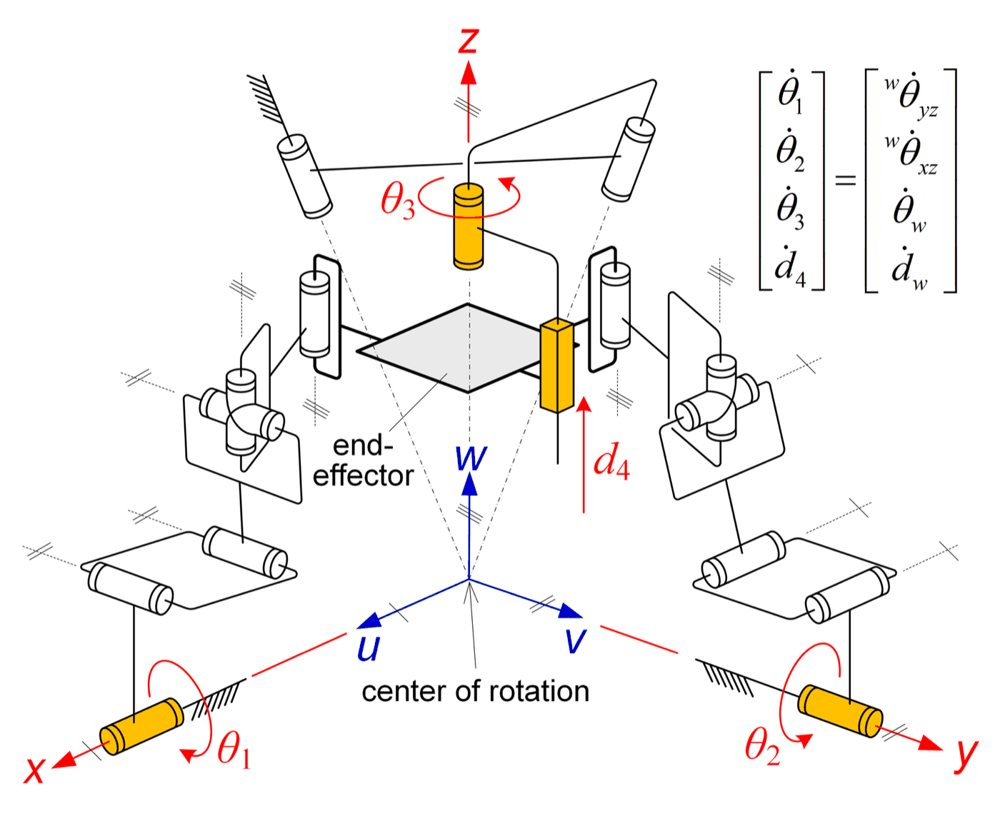
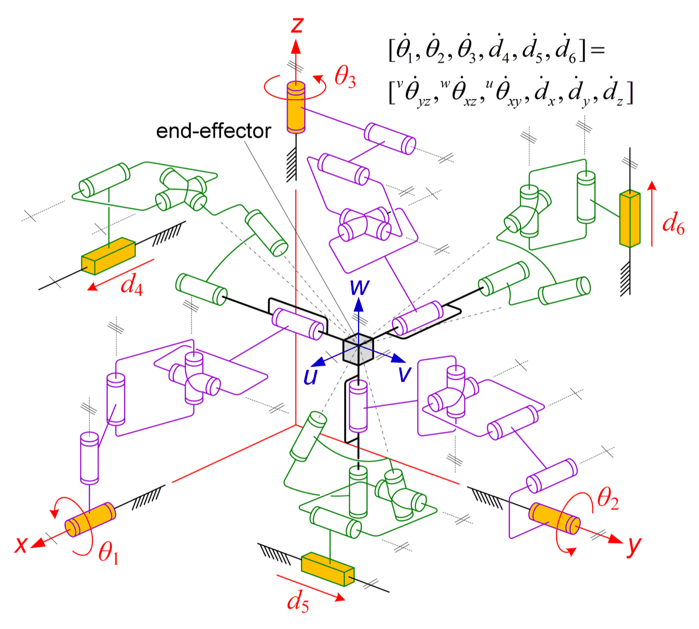
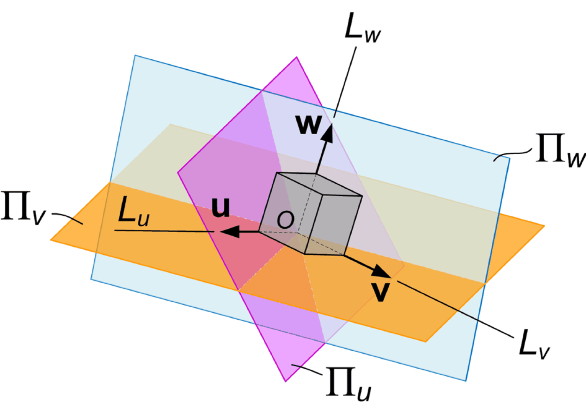

Research · Earlier work
Parallel & decoupled mechanisms
Earlier work. This research line is no longer active; the page is kept as a record of the published work.
A parallel manipulator is stiff and precise, but its motions are usually coupled: moving one actuator moves everything. The question here is how to choose the structure so that the motions come apart by geometry, which simplifies both control and calibration.
The approach, developed from my doctoral work with Jian S. Dai at King's College London, is to synthesise the limbs from the motion constraints a task actually needs, so that the resulting manipulator has the decoupling built into its structure. It gave rise to decoupled remote-centre-of-motion manipulators for surgery, now listed under Medical & rehabilitation devices.



Animations
One animated page per representative paper, drawn in the style of the papers’ own figures.
One motor, one angle: projective motion
Describe an axis by the angles of its two shadows and each motor of a parallel manipulator can set one of them alone.
Animation · 2014A wrist whose three motors do not interfere
Three planes hinged on the base axes each hold one point of a platform on a ball joint; one motor turns one plane.
Animation · 2013One leg decides the motion, the others drive it
A serial constraint leg fixes what the platform can do; constraint-free legs carry the motors. Remove the leg and see why.
Representative papers
- Structure synthesis of a class of parallel manipulators with fully decoupled projective motion. animation
Kuo, C.-H. and Dai, J. S., ASME Journal of Mechanisms and Robotics, 2021. doi - A non-overconstrained variant of the Agile Eye with a special decoupled kinematics. animation
Kuo, C.-H., Dai, J. S. and Legnani, G., Robotica, 2014. doi - Task-oriented structure synthesis of a class of parallel manipulators using motion constraint generator. animation
Kuo, C.-H. and Dai, J. S., Mechanism and Machine Theory, 2013. doi
Also under this theme
- Book chapter A partially-decoupled 4-DOF general 3SPS/PS parallel manipulator.
Kuo, C.-H. and Dai, J. S., In: Legnani, G. and Fassi, I. (eds), Robotics: State of the Art and Future Trends, Nova Science, 2011. link
Three extensible SPS legs and a central PS leg carry the platform: a four-degree-of-freedom parallel manipulator with partially decoupled motion.
Figures on this page are the author's own drawings and photographs as published in the papers cited, reproduced here under the publishers' author reuse rights. Copyright remains with the respective publishers.